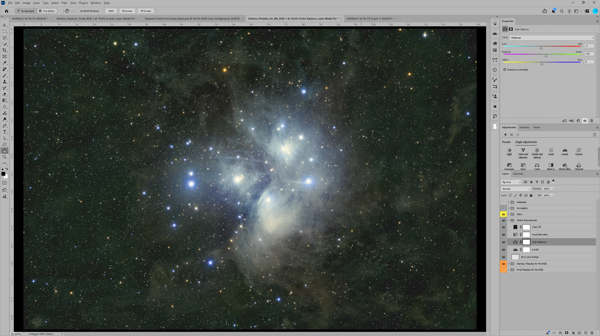
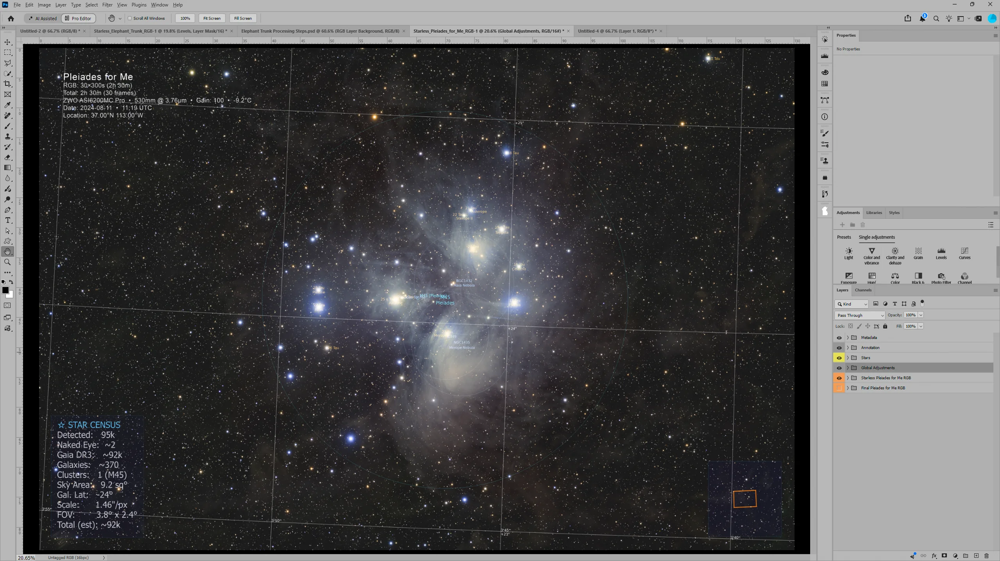
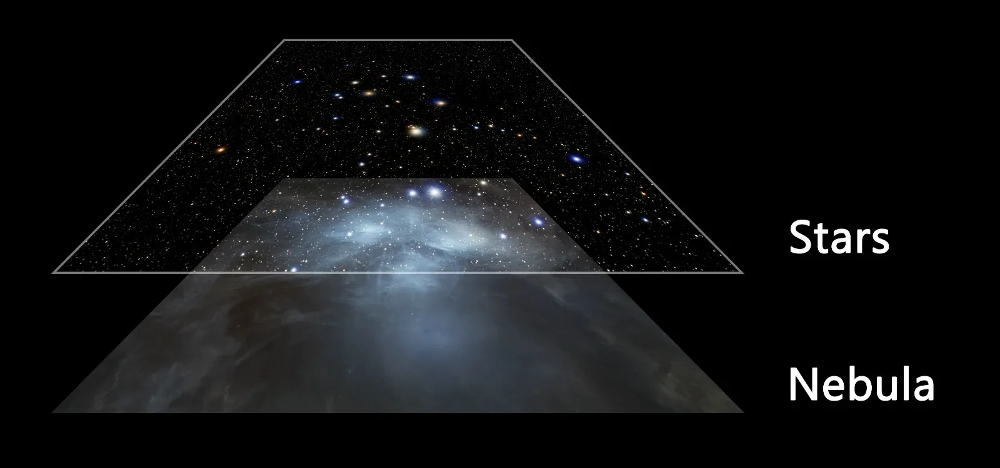

Automatic calibration
Bias, darks and flats found and matched for every light — even across nights and filters. Keep a calibration library and PiMagic picks the right masters by itself.
// more details
Workflow automation for PixInsight, with an auto-loader for Photoshop. The home page is two clicks — this is what happens inside them, and what you get to play with afterwards.
// what's inside
Bias, darks and flats found and matched for every light — even across nights and filters. Keep a calibration library and PiMagic picks the right masters by itself.
L, R, G, B, Hα, OIII, SII and dual-band recognised automatically. RGB, LRGB, SHO and HOO combined for you.
Deep-sky mosaics and landscape panoramas: every pane found, placed, matched and blended.
Our own blind solver: linear or stretched, any format. Knows where you pointed and names what it sees.
True star colours, calibrated against star catalogues — no colour casts, no guesswork.
Light pollution and sky gradients removed, nebula glow kept.
Sharper detail, cleaner backgrounds, and a starless layer plus a stars layer for your own finishing. Uses RC-Astro's BlurXTerminator, NoiseXTerminator and StarXTerminator when they are installed.
Finished TIFFs, and AstroMagic builds the layer groups for you.
A report and previews for every run, so you always know what was done.
Runs on Mac, Windows and Linux, built on PixInsight 1.9.5. Your data never leaves your computer.
// PiMagic's layers · Rosette
PiMagic does the routine for you. What comes after is yours — the creativity.
A Raw stack → PiMagic, automatically


Drag the line. Left: the run's own stacked Hα master, linear, exactly as it comes out of stacking. Right: PiMagic's finished SHO from the same run — same pixels, same framing. Switch on the layers PiMagic delivers with it: every object named on a coordinate grid, the image's own metadata (filters, exposures, camera, date, place) and a sky map — each a separate layer you can show, hide or restyle.
B PiMagic → your creativity


On the left, this two-pane Rosette mosaic as it comes out of PiMagic — calibrated, stacked, assembled, coloured and ready. On the right, Craig Stocks took PiMagic's result of the same mosaic into Photoshop with AstroMagic and made it his own.
Same data, same framing. No hours of routine work in between — just his creative choices: colour, contrast, mood. And PiMagic's layers come along: show his finish clean, with its metadata, or with the full annotation.
Finished in Photoshop by Craig Stocks · Utah Desert Remote Observatories
// the engine underneath
Underneath, PiMagic's own tools and PixInsight's proven processes run every routine step and make the decisions a seasoned imager would — so you don't have to.
// PiSolver
PiSolver, our own blind solver, takes any image — linear or stretched, any format — finds where in the sky it is within seconds, and names what it sees.
Left: PiSolver live in PixInsight on a finished JPEG of the Witch Head by Craig Stocks.


// any camera
Real PiMagic results, one per camera type.


// AstroMagic for Photoshop · included
Prefer PixInsight, Affinity, GIMP or another tool? Every result is yours to take further — PiMagic does the routine, you do the art.
// AstroMagic · Pleiades
PiMagic hands over the nebula and the stars as separate layers. AstroMagic stacks them in Photoshop, so global adjustments shape the nebula and leave the stars alone. Drag: Craig's Pleiades as AstroMagic opens it, and after his global adjustments.



// questions
PixInsight 1.9.5 on Mac, Windows or Linux. RC-Astro's BlurXTerminator, NoiseXTerminator and StarXTerminator are used when installed (on Mac also the free RC-Astro command-line tool). Photoshop is needed only for AstroMagic.
PiMagic installs through the PixInsight repository; the download email has the details and an installation guide. If a download or licence activation is blocked, your firewall or antivirus is the usual cause — pause it briefly to complete the installation.
Mono and one-shot-colour astro cameras, DSLRs and mirrorless cameras, smart telescopes and fisheye lenses; L, R, G, B, Hα, OIII, SII and dual-band filters.
No — that is the point. PiMagic takes over the routine; the creative decisions stay yours. Smart mode decides the processing for you, Expert mode opens every setting, and the results are clean layered files you finish as you like.
By email, with the download and installation information and your receipt. Nothing arrived? Check your spam folder.
Select a folder, press Start. The creativity is yours.